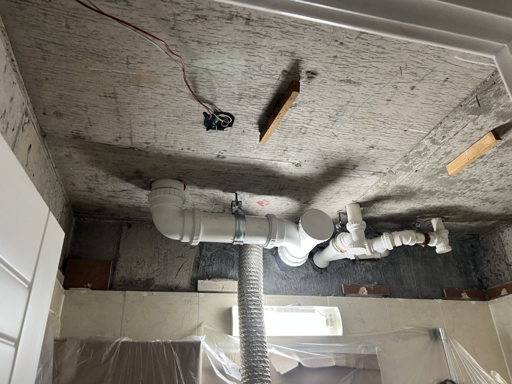
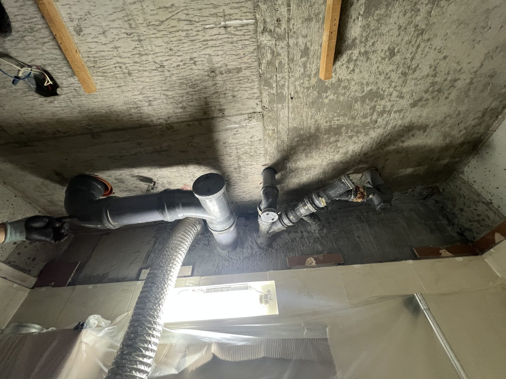

대전 선비마을3단지 배관 교체, 천장 속 문제 구간을 손본 현장

작업 핵심
현장 작업 한눈에 보기
- 현장
- 대전 선비마을3단지 천장
- 문제
- 천장 안쪽 문제 구간 확인
- 작업
- 상태 확인 후 문제 구간 교체
- 결과
- 작업 중·교체 후 사진
시험·천장 마감 결과는 미확인
선비마을3단지에서 천장 안쪽 배관을 확인하고 문제 구간을 교체했습니다. 작업 중 사진과 교체 후 사진에서 볼 부분, 보수 범위를 정할 때 필요한 점을 짧게 소개합니다.
1. 천장 안쪽 배관 확인
대전 선비마을3단지 세대 배관을 교체한 현장입니다. 사진은 천장 안쪽의 배관과 작업 위치를 살핀 모습입니다.
바깥 마감에 가려져 있던 관이 어디로 이어지는지 확인한 뒤 문제 구간을 교체했습니다.

2. 부분 보수와 구간 교체는 다릅니다
이번 현장에서는 문제 구간을 새 배관으로 연결했습니다. 새는 지점에 부속만 연결하는 보수와는 작업 범위가 다릅니다.
어떤 방법이 맞는지는 실제 배관의 재질과 손상 상태를 보고 정해야 합니다.
3. 대표 사진은 교체 후 모습
글 상단의 대표 사진에는 천장 안에 새로 연결한 배관이 보입니다. 본문의 작업 중 사진과 비교해 교체 위치를 살펴보세요.
마감을 덮기 전에 새 배관의 경로를 남겨 두면 나중에 어느 구간을 손봤는지 확인하기 좋습니다.
점검할 때 함께 알려 주시면 좋은 것
물자국이 생기는 위치와 시점, 평소와 달라진 수도 사용량을 알려 주시면 점검에 도움이 됩니다. 계량기 움직임만으로 원인을 확정하지는 않습니다.
천장 전체 사진과 문제가 보이는 부분의 근접 사진을 함께 준비해 주세요.